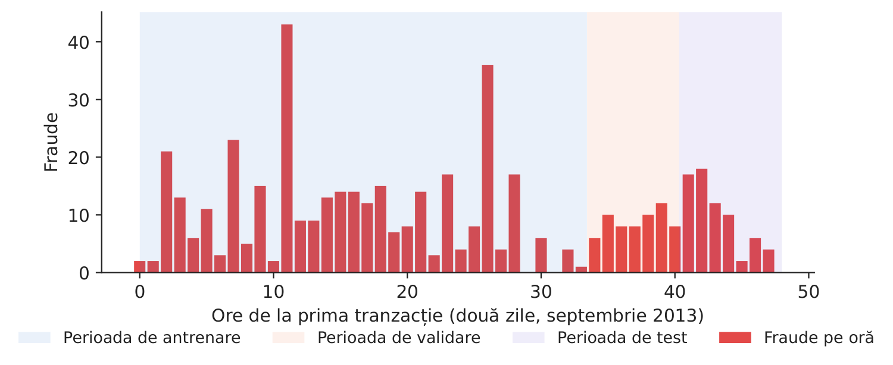
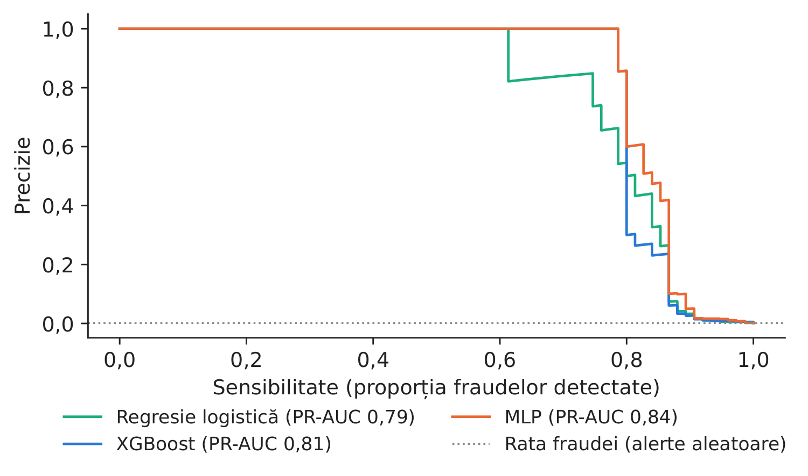
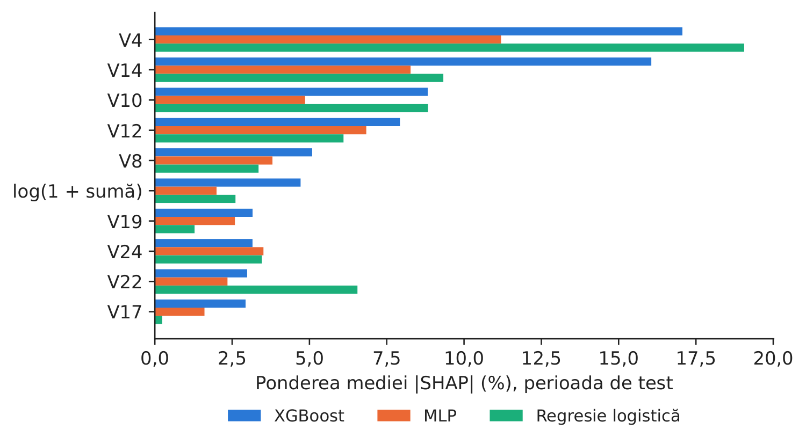
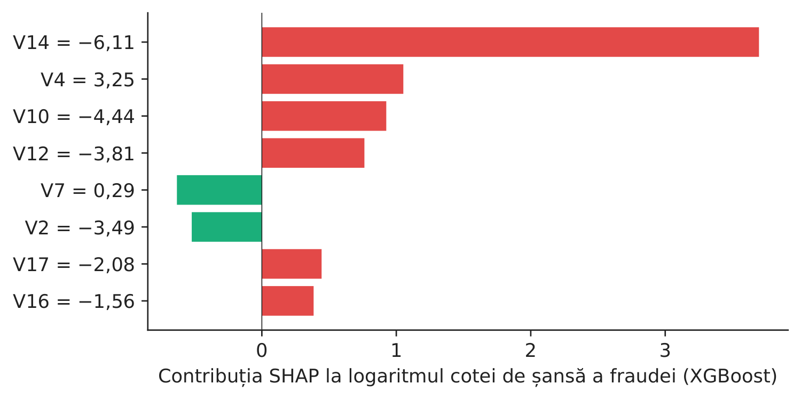
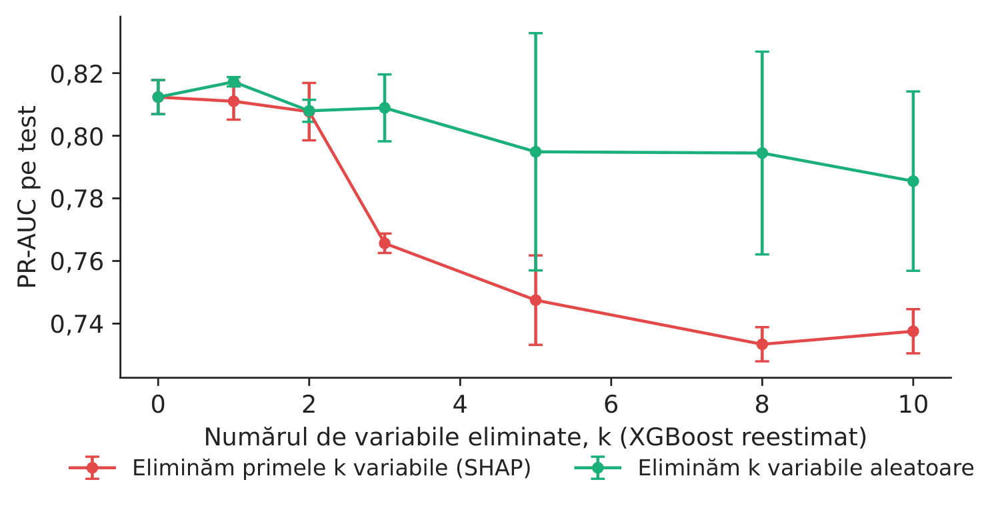
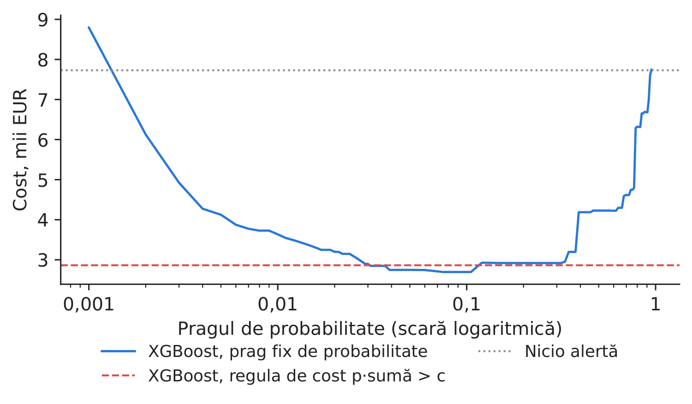

Studiul de caz 1 · Cursul 3
Detectarea explicabilă a fraudei — ce model, ce explicație, ce alertă?
Prof. dr. Daniel Traian PELE
Academia de Studii Economice din București, Departamentul de Statistică și Econometrie
Academia Română, Institutul de Prognoză Economică
Lucrarea de referință
Diaconu, D. și Pele, D. T. (2026). Explainable AI in financial fraud detection: Evidence from the IEEE-CIS fraud dataset. Proceedings of the International Conference on Business Excellence, 20(1), 118–132. doi:10.2478/picbe-2026-0015
Materiale
Problema decizională
Directorul operațiunilor antifraudă al unui emitent de carduri primește un scor de risc pentru fiecare plată. Echipa poate verifica doar cîteva sute de plăți pe zi; fiecare verificare consumă timpul unui analist și deranjează un client, iar fiecare fraudă ratată costă suma furată. Înainte ca modelul să fie folosit, comitetul de risc și autoritatea de supraveghere pun încă două întrebări: de ce este semnalată o plată și ar indica un alt model aceleași motive? Deciziile sînt: ce model se folosește (o regresie logistică simplă, arbori de decizie construiți secvențial sau o rețea neuronală), cum este explicat și cînd se emite o alertă.
Lucrarea de referință
Întrebarea de cercetare. Cum diferă modelele tabelare de modelele pe grafuri, nu doar prin acuratețe, ci și prin ceea ce pot explica despre fraudă, și cum pot fi combinate explicațiile la nivelul variabilelor cu cele la nivelul rețelei într-un singur cadru (p. 119, 121)?
Datele. Datele IEEE-CIS (Institute of Electrical and Electronics Engineers, Computational Intelligence Society) pentru detectarea fraudei: 590.540 de tranzacții de comerț electronic, 20.663 de fraude (3,50 %), 432 de variabile (Tabelul 1, p. 125); împărțire aleatoare 70/30 în eșantioane de antrenare și de validare (p. 122). Pentru modelul pe graf, tranzacțiile sînt legate de noduri pentru identitate, dispozitiv, adresă și domeniul de e-mail, cu muchii inverse pentru transmiterea mesajelor în ambele sensuri (p. 125–126).
Metoda. Două modele de tip gradient boosting, XGBoost (eXtreme Gradient Boosting) și CatBoost, comparate cu o rețea GraphSAGE (graph sample and aggregate) pe un graf eterogen (ec. 1–5, p. 121–122). Explicații pe două niveluri: valorile SHAP (SHapley Additive exPlanations) pentru modelele tabelare (ec. 6–7, p. 123) și, pentru graf, eliminarea cîte unui tip de relație (se măsoară scăderea ariei de sub curba ROC, ROC-AUC, receiver operating characteristic, ec. 8) și eliminarea vecinilor după distanță (se păstrează doar vecinătățile de ordin \(k\), ec. 9, p. 123–124). Performanța este raportată prin ROC-AUC, precizie, sensibilitate și scorul F1 la un prag optim (p. 123).
Principalele rezultate ale lucrării.
- XGBoost (1.000 de arbori, adîncime 10) atinge ROC-AUC 0,9763, precizie 0,8955, sensibilitate 0,7509 și F1 0,8169 la pragul 0,2055; CatBoost obține 0,9636, 0,8915, 0,7091 și, respectiv, 0,7899 (Tabelul 2, p. 126–127).
- Valorile SHAP globale arată că scorurile de fraudă sînt determinate de variabile de consecvență comportamentală, de identitate și de tipare ale tranzacțiilor, iar ordinea variabilelor este în mare măsură aceeași pentru cele două modele (p. 128).
- GraphSAGE atinge ROC-AUC 0,8729 și adaugă explicații relaționale: eliminarea legăturilor către entitățile id_31 și addr1 reduce ROC-AUC cu 0,0303 și, respectiv, 0,0255 (Tabelul 3); fără niciun vecin (\(k=0\)), ROC-AUC scade la 0,754, iar vecinii de ordinul întîi (\(k=1\)) îl readuc integral la nivelul de bază (Tabelul 4, p. 129–130).
- Concluzia: detectarea explicabilă a fraudei trebuie să combine mai multe tipuri de modele, modelele de tip boosting pentru riscul la nivelul variabilelor și modelele pe grafuri pentru structura relațională a fraudei (p. 131).
Metoda, pas cu pas
Intuiția metodei
Un model antifraudă ordonează plățile după risc; o explicație îi arată analistului ce caracteristici ale unei plăți au urcat-o în această ordine. Dacă două modele foarte diferite, arborii de decizie și o rețea neuronală, indică aceleași caracteristici, explicația descrie datele, nu particularitățile unui singur model. Eliminarea celor mai importante caracteristici și reestimarea modelului arată cîtă performanță poartă ele de fapt — aceeași logică precum eliminarea unui tip de relație din graful din lucrare.
Fie \(y_i\in\{0,1\}\) indicatorul de fraudă și \(\mathbf x_i\in\mathbb R^{p}\) cele \(p=29\) de variabile de intrare ale plății \(i\). Regresia logistică: \(\Pr(y_i=1\mid\mathbf x_i)=\sigma(\beta_0+\boldsymbol\beta^\top\mathbf x_i)\), \(\sigma(z)=1/(1+e^{-z})\). Arborii construiți secvențial (ec. 1–2 din lucrare): \(\hat y_i=\sum_{m=1}^{M}f_m(\mathbf x_i)\), fiecare arbore \(f_m\) fiind ales pentru a minimiza \(\sum_i l(y_i,\hat y_i)+\sum_m\Omega(f_m)\), unde \(l\) este funcția de pierdere logaritmică, iar \(\Omega(f)=\gamma T+\tfrac12\lambda\lVert\mathbf w\rVert^2\) penalizează numărul de frunze \(T\) și ponderile frunzelor \(\mathbf w\). Perceptronul multistrat (MLP): \(\mathbf h_1=\mathrm{ReLU}(\mathbf W_1\mathbf x+\mathbf b_1)\), \(\mathbf h_2=\mathrm{ReLU}(\mathbf W_2\mathbf h_1+\mathbf b_2)\), \(\hat\pi=\sigma(\mathbf w_3^\top\mathbf h_2+b_3)\), cu 64 și 32 de neuroni, dropout 0,2 după fiecare strat ascuns și funcția de pierdere \(-\frac1n\sum_i[y_i\log\hat\pi_i+(1-y_i)\log(1-\hat\pi_i)]+\lambda_w\lVert\boldsymbol\theta\rVert^2\) (penalizarea ponderilor \(\lambda_w=10^{-4}\), funcția de activare liniară rectificată ReLU\((z)=\max(0,z)\)); antrenarea se oprește cînd scorul pe eșantionul de validare nu se mai îmbunătățește (oprire timpurie).
Corecția eșantionării. Fișierul nostru păstrează toate fraudele și o proporție \(\beta\) = 0,1000 din plățile legitime. Un scor \(p_s\) estimat pe acest eșantion este readus la nivelul populației prin \(p=\beta p_s/(\beta p_s-p_s+1)\) (cursul 3), iar toate măsurile de performanță ponderează rîndurile legitime cu \(1/\beta\). Măsurile de performanță. Precizia \(=TP/(TP+FP)\), sensibilitatea \(=TP/(TP+FN)\) (\(TP\), \(FP\), \(FN\): rezultate pozitive adevărate, pozitive false, negative false); aria de sub curba precizie–sensibilitate, PR-AUC \(=\sum_k(R_k-R_{k-1})P_k\), calculată pe scorurile ordonate, este măsura principală pentru un eveniment rar (un scor aleator are PR-AUC egal cu rata fraudei).
Explicațiile. SHAP scrie un scor ca \(f(\mathbf x)=\phi_0+\sum_{j=1}^{p}\phi_j\) (ec. 6 din lucrare), cu valoarea Shapley \(\phi_j=\sum_{S\subseteq F\setminus\{j\}}\frac{|S|!(p-|S|-1)!}{p!}\,[f_{S\cup\{j\}}(\mathbf x_{S\cup\{j\}})-f_S(\mathbf x_S)]\) (ec. 7), unde \(F\) este mulțimea variabilelor, iar \(f_S\) modelul care folosește doar variabilele din \(S\). Pentru arbori, metoda TreeSHAP o calculează exact; pentru MLP folosim gradienții așteptați, \(\phi_j=\mathbb{E}_{\mathbf x'\sim\mathcal B,\,\alpha\sim U(0,1)}\big[(x_j-x'_j)\,\partial f(\mathbf x'+\alpha(\mathbf x-\mathbf x'))/\partial x_j\big]\), cu un eșantion de referință \(\mathcal B\) din datele de antrenare; pentru regresia logistică, \(\phi_j=\beta_j(x_j-\bar x_j)\). Importanța globală este media lui \(|\phi_j|\); concordanța dintre două modele este corelația rangurilor Spearman a importanțelor lor. Eliminarea variabilelor (analogul ec. 8): \(\Delta_k=\text{PR-AUC}(F)-\text{PR-AUC}(F\setminus\text{primele }k)\), cu modelul reestimat fără cele mai importante \(k\) variabile, comparat cu eliminarea aceluiași număr de variabile alese aleator.
Regula de decizie. Verificarea unei plăți costă \(c\); o fraudă neverificată înseamnă pierderea sumei \(A_i\). Verificarea merită atunci cînd pierderea așteptată depășește costul verificării: se emite o alertă dacă \(\hat p_i\,A_i>c\).
În practică
Ordonați plățile cu ajutorul modelului, explicați primele cazuri din listă cu SHAP, verificați că un al doilea model indică aceleași variabile și stabiliți regula de alertă pe baza propriului cost de verificare și a sumei expuse riscului, nu pe baza unei probabilități fixe de 0,5.
Replicare pe datele cursului
Notebook-ul C1_notebook_RO.ipynb folosește datele cursului privind frauda cu carduri (Worldline și Machine Learning Group din ULB, Université Libre de Bruxelles; deținători europeni de carduri, două zile din septembrie 2013): toate cele 492 fraude și un eșantion de 10 % din plățile legitime, în total 28.924 de rînduri.
Cele 29 de variabile de intrare sînt cele 28 de componente principale V1–V28 publicate de proprietarul datelor și \(\log(1+\text{sumă})\). Rîndurile sînt împărțite în ordine cronologică: antrenare (primele 60 %, 360 de fraude), validare (următoarele 20 %, 57 de fraude, folosite pentru oprirea timpurie), test (ultimele 7,7 ore, 75 de fraude din aproximativ 57.174 de plăți, rata fraudei 0,131 %).
Fiecare model este antrenat cu cinci valori inițiale ale generatorului aleator (0–4). Nivelul de graf din lucrare are nevoie de chei ale entităților (dispozitive, adrese, domenii de e-mail), pe care aceste date nu le conțin; studiul de caz 3 aplică modele pe grafuri unui graf de tranzacții.

Figura 1. Fraudele pe oră și împărțirea cronologică.
Sursa: datele ULB privind cardurile (OpenML 1597); septembrie 2013.

Figura 2. Curbele precizie–sensibilitate în perioada de test (scorul mediu din cinci rulări).
Sursa: calcule proprii; ponderi la nivelul populației.
Tabelul 1. Performanța în perioada de test, media a cinci rulări (abaterea standard între rulări); sensibilitatea și precizia atunci cînd sînt verificate primele 0,5 % dintre plăți. Cea mai bună valoare este marcată cu aldine.
| Model | ROC-AUC | PR-AUC | abatere PR-AUC | Sensibilitate la 0,5 % | Precizie la 0,5 % |
|---|---|---|---|---|---|
| Regresie logistică | 0,982 | 0,789 | 0,000 | 0,867 | 0,220 |
| XGBoost | 0,983 | 0,815 | 0,005 | 0,859 | 0,219 |
| MLP | 0,980 | 0,837 | 0,004 | 0,867 | 0,220 |
Sursa: calcule proprii. Lucrarea (IEEE-CIS, împărțire aleatoare): XGBoost ROC-AUC 0,9763, CatBoost 0,9636, GraphSAGE 0,8729 (Tabelul 2, p. 127; p. 129).
Ce arată datele: performanța. Toate cele trei modele ordonează foarte bine plățile (ROC-AUC între 0,982 și 0,983), de aceea măsura relevantă este PR-AUC: XGBoost 0,815 (abaterea standard 0,005), MLP 0,837 (abaterea standard 0,004), regresia logistică 0,789. O procedură bootstrap pereche pe plățile din perioada de test (2.000 de reeșantionări) dă un interval de încredere de 95 % pentru diferența MLP minus regresia logistică de [0,004; 0,107], iar pentru XGBoost minus MLP de [\(-\)0,048; 0,003]: rețeaua îmbunătățește reperul, iar XGBoost și MLP nu pot fi deosebite pe baza celor 75 de fraude din perioada de test. Verificarea primelor 0,5 % dintre plăți detectează aproximativ 0,86 din fraude, cu oricare dintre modele.

Figura 3. Importanța SHAP globală a primelor 10 variabile ale XGBoost, pentru cele trei modele.
Sursa: valorile noastre SHAP; perioada de test.

Figura 4. De ce a fost semnalată această fraudă? Ora 42,9, suma 1.504,93 EUR, probabilitatea 0,769.
Sursa: valorile noastre TreeSHAP (XGBoost, rularea 0).
Ce arată datele: explicațiile. Pentru XGBoost, primele trei variabile sînt V4, V14 și V10; ele concentrează 41,9 % din media \(|\)SHAP\(|\). Variabila principală a MLP este V4; arborii și rețeaua au în comun 6 dintre primele 10 variabile (corelația rangurilor Spearman pe toate cele 29 de variabile este 0,53; între XGBoost și regresia logistică, 0,57). Ca în lucrare, unde XGBoost și CatBoost indică aceiași factori principali, variabilele de top sînt comune unor modele foarte diferite, iar ordinea variabilelor mai puțin importante depinde de model — un motiv pentru a raporta partea de sus a clasamentului, nu întreaga listă. Explicația locală (Figura 4) arată o plată de valoare mare, semnalată în principal din cauza variabilelor V14 și V4.

Figura 5. Eliminarea variabilelor: PR-AUC pe test după eliminarea a \(k\) variabile și reestimare (media \(\pm\) abaterea standard, trei rulări).
Sursa: calcule proprii (XGBoost).

Figura 6. Costul perioadei de test după regula de alertă: costul verificării \(c\) = 5 EUR, frauda ratată = suma ei.
Sursa: calcule proprii (XGBoost).
Eliminarea variabilelor. Eliminarea celor mai importante cinci variabile și reestimarea modelului reduc PR-AUC pe test de la 0,812 la 0,747 (\(\Delta_5\) = 0,065); eliminarea a cinci variabile aleatoare costă doar 0,017. Ordinea SHAP identifică așadar variabilele care poartă semnalul; este aceeași verificare ca eliminarea tipurilor de relații din lucrare, aplicată unor grupuri de variabile în locul tipurilor de relații.
Tabelul 2. Politici de alertă în perioada de test (la nivelul populației): alerte verificate, fraude și sume recuperate, costul total (verificări plus sumele ratate). Costul cel mai mic este marcat cu aldine.
| Politica de alertă (perioada de test) | Alerte | Fraude detectate | EUR recuperați | Cost, mii EUR |
|---|---|---|---|---|
| Fără model: nicio alertă | 0 | 0 | 0 | 7,73 |
| Regresie logistică, prag 0,5 | 58 | 48 | 3.672 | 4,35 |
| Regresie logistică, regula de cost \(p\cdot A>c\) | 93 | 23 | 5.277 | 2,92 |
| XGBoost, prag 0,5 | 51 | 51 | 3.756 | 4,23 |
| XGBoost, regula de cost \(p\cdot A>c\) | 84 | 24 | 5.286 | 2,86 |
| MLP, prag 0,5 | 49 | 49 | 4.906 | 3,07 |
| MLP, regula de cost \(p\cdot A>c\) | 83 | 23 | 5.277 | 2,87 |
Sursa: calcule proprii; \(c\) = 5 EUR pe verificare (ipoteză); probabilitatea medie din cinci rulări.
Cifra relevantă pentru decizie. Fără alerte, fraudele din perioada de test costă 7,7 mii EUR. Un prag fix de 0,5 pentru probabilitatea XGBoost verifică doar cazurile cele mai clare (51 de fraude detectate) și reduce costul la 4,2 mii EUR. Regula de cost \(\hat p_i A_i>c\) verifică aproximativ 84 de plăți, detectează mai puține fraude (24), dar pe cele mai mari (5,3 mii EUR), și reduce costul la 2,9 mii EUR, adică o economie de 4,9 mii EUR în 7,7 ore. Cel mai bun prag fix, găsit ulterior pe datele de test (0,075), ar da 2,7 mii EUR; regula de cost ajunge aproape la același cost fără a folosi rezultatele din perioada de test.
Întrebări pentru discuție
- XGBoost și MLP sînt la egalitate statistică pe datele noastre. Pe care l-ați folosi și ce importanță ați acorda explicabilității, stabilității între rulări și costului de întreținere?
- Variabilele V1–V28 sînt componente principale anonimizate. Este utilă o explicație SHAP formulată în termenii lui „V14” pentru un analist sau pentru un client care întreabă de ce i-a fost blocată o plată? De ce ați avea nevoie pentru a o face utilă?
- Regula de cost detectează mai puține fraude, dar recuperează mai mulți euro. Este acest lucru acceptabil pentru reputația companiei, pentru clienți și pentru autoritatea de supraveghere?
- Autorii fraudelor se adaptează. Cît de des ați reantrena modelul și cum ați verifica faptul că explicațiile lui nu s-au modificat (studiul de caz 3)?
- Lucrarea arată că legăturile dintre tranzacții (dispozitive, adrese și domenii de e-mail comune) poartă semnal de fraudă. Ce legături înregistrează compania dumneavoastră și ce ar fi necesar pentru a construi un astfel de graf?
Limitele replicării
(i) Datele noastre acoperă două zile și 492 de fraude, astfel încît perioada de test are doar 75 de fraude, iar intervalele de încredere sînt largi; lucrarea folosește 590.540 de tranzacții. (ii) Variabilele de intrare sînt componente principale anonimizate, de aceea explicațiile sînt statistice, nu în termenii unor variabile de afaceri — o caracteristică pe care lucrarea o semnalează și pentru IEEE-CIS (p. 130). (iii) În lipsa cheilor entităților, nivelul de graf din lucrare (GraphSAGE, eliminarea muchiilor și a vecinilor) este înlocuit cu eliminarea variabilelor. (iv) Regula de cost folosește suma tranzacției drept pierdere și un cost fix al verificării; rambursările, recuperările și pierderea clienților nu sînt modelate.
Studiul de caz 1 pe scurt
- ÎntrebareCe model antifraudă, ce explicație și cînd se emite o alertă?
- DatePlăți cu carduri ULB, septembrie 2013; 492 de fraude; împărțire cronologică.
- MetodăRegresie logistică, XGBoost, MLP (5 rulări); SHAP; eliminarea variabilelor; regula de cost.
- RezultatPR-AUC 0,815 (XGBoost), 0,837 (MLP); variabilele principale V4, V14, V10.
- DecizieAlertă cînd probabilitatea \(\times\) suma \(>\) costul verificării.

Sursa: valorile noastre SHAP pe datele ULB privind cardurile; perioada de test (ultimele 7,7 ore).
Abrevieri
| GraphSAGE | eșantionare și agregare pe graf |
|---|---|
| IEEE-CIS | Institute of Electrical and Electronics Engineers, Computational Intelligence Society |
| MLP | perceptron multistrat |
| PR-AUC | aria de sub curba precizie–sensibilitate |
| ReLU | unitate liniară rectificată |
| ROC | receiver operating characteristic |
| ROC-AUC | aria de sub curba ROC (receiver operating characteristic) |
| SHAP | SHapley Additive exPlanations |
| TreeSHAP | SHAP pentru ansambluri de arbori |
| ULB | Université Libre de Bruxelles |
Textul, cifrele, graficele și tabelele acestei pagini sînt cele ale studiului de caz; toate cifrele sînt calculate de notebook-ul studiului pe datele cursului.